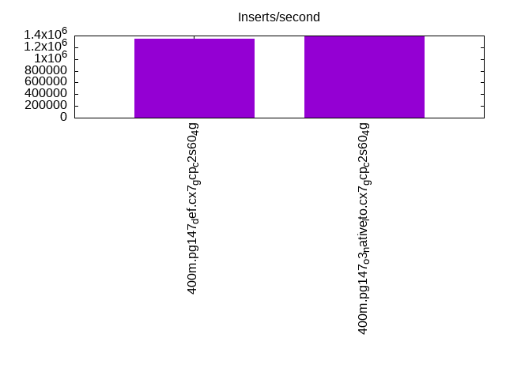
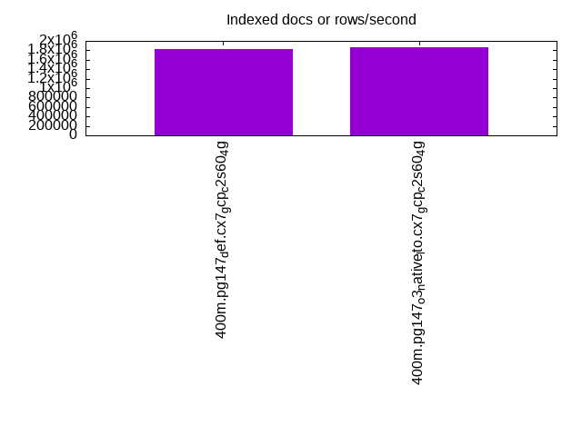
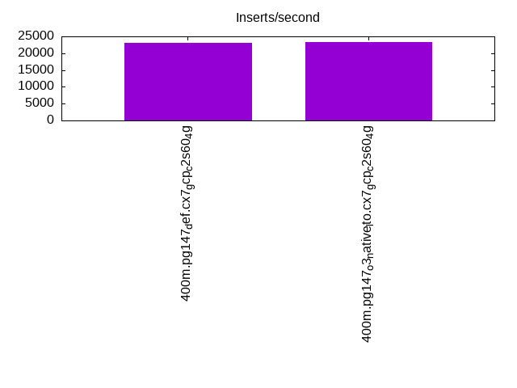
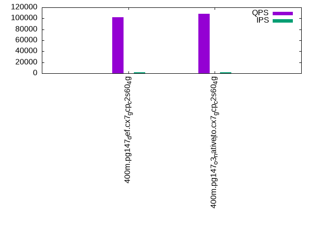
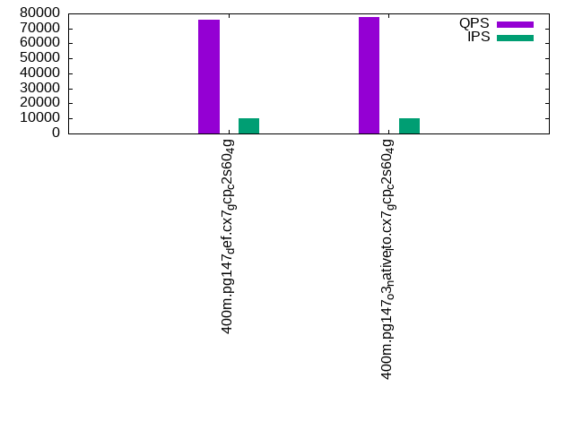
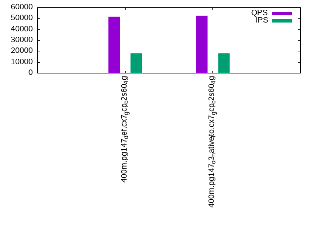

This is a report for the insert benchmark with 400M docs and 20 client(s). It is generated by scripts (bash, awk, sed) and Tufte might not be impressed. An overview of the insert benchmark is here and a short update is here. Below, by DBMS, I mean DBMS+version.config. An example is my8020.c10b40 where my means MySQL, 8020 is version 8.0.20 and c10b40 is the name for the configuration file.
The test server is a c2-standard-60 from GCP with 30 cores, hyperthreading disabled, 240G RAM and 3T from XFS and SW RAID 0 striped over 8 local NVMe drives. The benchmark was run with 20 clients and there were 1 or 2 connections per client (1 for queries, 1 for inserts). The benchmark loads 400M rows without secondary indexes, creates secondary indexes, loads another 400M rows then does 3 read+write tests for one hour each that do queries as fast as possible with 100, 500 and then 1000 writes/second/client concurrent with the queries. Each read-write test runs for 1800 seconds. The test was configured to use a table per client. The database fits in the OS page cache but not the DBMS buffer pool. Clients and the DBMS share one server. The per-database configs are in the per-database subdirectories here.
The tested DBMS are:
The numbers are inserts/s for l.i0 and l.i1, indexed docs (or rows) /s for l.x and queries/s for q*.2. The values are the average rate over the entire test for inserts (IPS) and queries (QPS). The range of values for IPS and QPS is split into 3 parts: bottom 25%, middle 50%, top 25%. Values in the bottom 25% have a red background, values in the top 25% have a green background and values in the middle have no color. A gray background is used for values that can be ignored because the DBMS did not sustain the target insert rate. Red backgrounds are not used when the minimum value is within 80% of the max value.
| dbms | l.i0 | l.x | l.i1 | q100.1 | q500.1 | q1000.1 |
|---|---|---|---|---|---|---|
| 400m.pg147_def.cx7_gcp_c2s60_4g | 1351351 | 1835321 | 23135 | 101923 | 75633 | 51512 |
| 400m.pg147_o3_native_lto.cx7_gcp_c2s60_4g | 1393728 | 1860930 | 23214 | 108297 | 77509 | 52387 |
This lists the average rate of inserts/s for the tests that do inserts concurrent with queries. For such tests the query rate is listed in the table above. The read+write tests are setup so that the insert rate should match the target rate every second. Cells that are not at least 95% of the target have a red background to indicate a failure to satisfy the target.
| dbms | q100.1 | q500.1 | q1000.1 |
|---|---|---|---|
| pg147_def.cx7_gcp_c2s60_4g | 1976 | 9885 | 18063 |
| pg147_o3_native_lto.cx7_gcp_c2s60_4g | 1976 | 9885 | 18063 |
| target | 2000 | 10000 | 20000 |
l.i0: load without secondary indexes. Graphs for performance per 1-second interval are here.
Average throughput:
Insert response time histogram: each cell has the percentage of responses that take <= the time in the header and max is the max response time in seconds. For the max column values in the top 25% of the range have a red background and in the bottom 25% of the range have a green background. The red background is not used when the min value is within 80% of the max value.
| dbms | 256us | 1ms | 4ms | 16ms | 64ms | 256ms | 1s | 4s | 16s | gt | max |
|---|---|---|---|---|---|---|---|---|---|---|---|
| pg147_def.cx7_gcp_c2s60_4g | 61.250 | 37.566 | 1.109 | 0.037 | 0.027 | 0.011 | 0.001 | 1.102 | |||
| pg147_o3_native_lto.cx7_gcp_c2s60_4g | 61.614 | 37.404 | 0.905 | 0.034 | 0.029 | 0.013 | 0.001 | 1.310 |
Performance metrics for the DBMS listed above. Some are normalized by throughput, others are not. Legend for results is here.
ips qps rps rmbps wps wmbps rpq rkbpq wpi wkbpi csps cpups cspq cpupq dbgb1 dbgb2 rss maxop p50 p99 tag 1351351 0 551 8.7 9449.0 568.9 0.000 0.007 0.007 0.431 207204 59.9 0.153 13 38.3 103.2 NA 1.102 76815 7591 400m.pg147_def.cx7_gcp_c2s60_4g 1393728 0 674 7.4 9816.2 593.3 0.000 0.005 0.007 0.436 227440 59.1 0.163 13 38.3 103.2 NA 1.310 79411 8890 400m.pg147_o3_native_lto.cx7_gcp_c2s60_4g
l.x: create secondary indexes.
Average throughput:
Performance metrics for the DBMS listed above. Some are normalized by throughput, others are not. Legend for results is here.
ips qps rps rmbps wps wmbps rpq rkbpq wpi wkbpi csps cpups cspq cpupq dbgb1 dbgb2 rss maxop p50 p99 tag 1835321 0 12458 268.8 5920.4 763.9 0.007 0.150 0.003 0.426 115729 20.7 0.063 3 73.5 193.4 NA 0.321 NA NA 400m.pg147_def.cx7_gcp_c2s60_4g 1860930 0 7108 260.8 5843.4 763.5 0.004 0.143 0.003 0.420 116025 20.5 0.062 3 73.5 190.9 NA 0.387 NA NA 400m.pg147_o3_native_lto.cx7_gcp_c2s60_4g
l.i1: continue load after secondary indexes created. Graphs for performance per 1-second interval are here.
Average throughput:
Insert response time histogram: each cell has the percentage of responses that take <= the time in the header and max is the max response time in seconds. For the max column values in the top 25% of the range have a red background and in the bottom 25% of the range have a green background. The red background is not used when the min value is within 80% of the max value.
| dbms | 256us | 1ms | 4ms | 16ms | 64ms | 256ms | 1s | 4s | 16s | gt | max |
|---|---|---|---|---|---|---|---|---|---|---|---|
| pg147_def.cx7_gcp_c2s60_4g | 0.012 | 88.458 | 11.526 | 0.004 | 0.415 | ||||||
| pg147_o3_native_lto.cx7_gcp_c2s60_4g | 0.016 | 88.550 | 11.430 | 0.004 | 0.411 |
Performance metrics for the DBMS listed above. Some are normalized by throughput, others are not. Legend for results is here.
ips qps rps rmbps wps wmbps rpq rkbpq wpi wkbpi csps cpups cspq cpupq dbgb1 dbgb2 rss maxop p50 p99 tag 23135 0 70070 722.2 62760.9 598.9 3.029 31.967 2.713 26.510 131992 12.2 5.705 158 163.3 258.5 0.0 0.415 1199 599 400m.pg147_def.cx7_gcp_c2s60_4g 23214 0 70190 722.2 63026.9 600.5 3.024 31.857 2.715 26.488 132756 11.9 5.719 154 163.3 259.4 0.0 0.411 1199 599 400m.pg147_o3_native_lto.cx7_gcp_c2s60_4g
q100.1: range queries with 100 insert/s per client. Graphs for performance per 1-second interval are here.
Average throughput:
Query response time histogram: each cell has the percentage of responses that take <= the time in the header and max is the max response time in seconds. For max values in the top 25% of the range have a red background and in the bottom 25% of the range have a green background. The red background is not used when the min value is within 80% of the max value.
| dbms | 256us | 1ms | 4ms | 16ms | 64ms | 256ms | 1s | 4s | 16s | gt | max |
|---|---|---|---|---|---|---|---|---|---|---|---|
| pg147_def.cx7_gcp_c2s60_4g | 67.172 | 32.581 | 0.242 | 0.005 | nonzero | nonzero | 0.212 | ||||
| pg147_o3_native_lto.cx7_gcp_c2s60_4g | 69.633 | 30.132 | 0.230 | 0.005 | nonzero | nonzero | 0.234 |
Insert response time histogram: each cell has the percentage of responses that take <= the time in the header and max is the max response time in seconds. For max values in the top 25% of the range have a red background and in the bottom 25% of the range have a green background. The red background is not used when the min value is within 80% of the max value.
| dbms | 256us | 1ms | 4ms | 16ms | 64ms | 256ms | 1s | 4s | 16s | gt | max |
|---|---|---|---|---|---|---|---|---|---|---|---|
| pg147_def.cx7_gcp_c2s60_4g | 0.015 | 99.860 | 0.096 | 0.029 | 0.734 | ||||||
| pg147_o3_native_lto.cx7_gcp_c2s60_4g | 0.015 | 99.858 | 0.106 | 0.021 | 0.376 |
Performance metrics for the DBMS listed above. Some are normalized by throughput, others are not. Legend for results is here.
ips qps rps rmbps wps wmbps rpq rkbpq wpi wkbpi csps cpups cspq cpupq dbgb1 dbgb2 rss maxop p50 p99 tag 1976 101923 86278 758.9 6342.0 71.7 0.847 7.625 3.210 37.154 474329 37.7 4.654 111 163.9 235.8 0.0 0.212 5085 4523 400m.pg147_def.cx7_gcp_c2s60_4g 1976 108297 81146 788.0 6348.6 72.6 0.749 7.451 3.213 37.613 497635 38.1 4.595 106 163.9 234.6 0.0 0.234 5527 4765 400m.pg147_o3_native_lto.cx7_gcp_c2s60_4g
q500.1: range queries with 500 insert/s per client. Graphs for performance per 1-second interval are here.
Average throughput:
Query response time histogram: each cell has the percentage of responses that take <= the time in the header and max is the max response time in seconds. For max values in the top 25% of the range have a red background and in the bottom 25% of the range have a green background. The red background is not used when the min value is within 80% of the max value.
| dbms | 256us | 1ms | 4ms | 16ms | 64ms | 256ms | 1s | 4s | 16s | gt | max |
|---|---|---|---|---|---|---|---|---|---|---|---|
| pg147_def.cx7_gcp_c2s60_4g | 59.981 | 38.421 | 1.464 | 0.128 | 0.006 | nonzero | 0.223 | ||||
| pg147_o3_native_lto.cx7_gcp_c2s60_4g | 60.789 | 37.633 | 1.446 | 0.126 | 0.006 | nonzero | 0.128 |
Insert response time histogram: each cell has the percentage of responses that take <= the time in the header and max is the max response time in seconds. For max values in the top 25% of the range have a red background and in the bottom 25% of the range have a green background. The red background is not used when the min value is within 80% of the max value.
| dbms | 256us | 1ms | 4ms | 16ms | 64ms | 256ms | 1s | 4s | 16s | gt | max |
|---|---|---|---|---|---|---|---|---|---|---|---|
| pg147_def.cx7_gcp_c2s60_4g | 0.008 | 92.164 | 7.823 | 0.005 | 0.274 | ||||||
| pg147_o3_native_lto.cx7_gcp_c2s60_4g | 0.004 | 92.297 | 7.698 | nonzero | 0.272 |
Performance metrics for the DBMS listed above. Some are normalized by throughput, others are not. Legend for results is here.
ips qps rps rmbps wps wmbps rpq rkbpq wpi wkbpi csps cpups cspq cpupq dbgb1 dbgb2 rss maxop p50 p99 tag 9885 75633 94344 884.7 29317.4 307.4 1.247 11.978 2.966 31.848 411905 36.5 5.446 145 167.5 236.7 0.0 0.223 3996 1982 400m.pg147_def.cx7_gcp_c2s60_4g 9885 77509 96098 909.0 29212.7 306.7 1.240 12.010 2.955 31.776 420603 35.7 5.427 138 167.4 236.7 NA 0.128 4123 1935 400m.pg147_o3_native_lto.cx7_gcp_c2s60_4g
q1000.1: range queries with 1000 insert/s per client. Graphs for performance per 1-second interval are here.
Average throughput:
Query response time histogram: each cell has the percentage of responses that take <= the time in the header and max is the max response time in seconds. For max values in the top 25% of the range have a red background and in the bottom 25% of the range have a green background. The red background is not used when the min value is within 80% of the max value.
| dbms | 256us | 1ms | 4ms | 16ms | 64ms | 256ms | 1s | 4s | 16s | gt | max |
|---|---|---|---|---|---|---|---|---|---|---|---|
| pg147_def.cx7_gcp_c2s60_4g | 53.443 | 42.066 | 3.875 | 0.577 | 0.040 | nonzero | 0.158 | ||||
| pg147_o3_native_lto.cx7_gcp_c2s60_4g | 53.491 | 42.089 | 3.816 | 0.565 | 0.038 | nonzero | 0.100 |
Insert response time histogram: each cell has the percentage of responses that take <= the time in the header and max is the max response time in seconds. For max values in the top 25% of the range have a red background and in the bottom 25% of the range have a green background. The red background is not used when the min value is within 80% of the max value.
| dbms | 256us | 1ms | 4ms | 16ms | 64ms | 256ms | 1s | 4s | 16s | gt | max |
|---|---|---|---|---|---|---|---|---|---|---|---|
| pg147_def.cx7_gcp_c2s60_4g | 0.002 | 82.866 | 17.132 | 0.001 | 0.270 | ||||||
| pg147_o3_native_lto.cx7_gcp_c2s60_4g | 0.002 | 82.686 | 17.312 | 0.001 | 0.277 |
Performance metrics for the DBMS listed above. Some are normalized by throughput, others are not. Legend for results is here.
ips qps rps rmbps wps wmbps rpq rkbpq wpi wkbpi csps cpups cspq cpupq dbgb1 dbgb2 rss maxop p50 p99 tag 18063 51512 96898 946.9 51666.2 531.0 1.881 18.824 2.860 30.100 362525 36.4 7.038 212 179.6 272.1 0.0 0.158 2701 1422 400m.pg147_def.cx7_gcp_c2s60_4g 18063 52387 98852 961.4 51571.5 527.9 1.887 18.792 2.855 29.925 367587 35.6 7.017 204 179.6 272.2 0.0 0.100 2734 1423 400m.pg147_o3_native_lto.cx7_gcp_c2s60_4g
l.i0: load without secondary indexes
Performance metrics for all DBMS, not just the ones listed above. Some are normalized by throughput, others are not. Legend for results is here.
ips qps rps rmbps wps wmbps rpq rkbpq wpi wkbpi csps cpups cspq cpupq dbgb1 dbgb2 rss maxop p50 p99 tag 1351351 0 551 8.7 9449.0 568.9 0.000 0.007 0.007 0.431 207204 59.9 0.153 13 38.3 103.2 NA 1.102 76815 7591 400m.pg147_def.cx7_gcp_c2s60_4g 1393728 0 674 7.4 9816.2 593.3 0.000 0.005 0.007 0.436 227440 59.1 0.163 13 38.3 103.2 NA 1.310 79411 8890 400m.pg147_o3_native_lto.cx7_gcp_c2s60_4g
l.x: create secondary indexes
Performance metrics for all DBMS, not just the ones listed above. Some are normalized by throughput, others are not. Legend for results is here.
ips qps rps rmbps wps wmbps rpq rkbpq wpi wkbpi csps cpups cspq cpupq dbgb1 dbgb2 rss maxop p50 p99 tag 1835321 0 12458 268.8 5920.4 763.9 0.007 0.150 0.003 0.426 115729 20.7 0.063 3 73.5 193.4 NA 0.321 NA NA 400m.pg147_def.cx7_gcp_c2s60_4g 1860930 0 7108 260.8 5843.4 763.5 0.004 0.143 0.003 0.420 116025 20.5 0.062 3 73.5 190.9 NA 0.387 NA NA 400m.pg147_o3_native_lto.cx7_gcp_c2s60_4g
l.i1: continue load after secondary indexes created
Performance metrics for all DBMS, not just the ones listed above. Some are normalized by throughput, others are not. Legend for results is here.
ips qps rps rmbps wps wmbps rpq rkbpq wpi wkbpi csps cpups cspq cpupq dbgb1 dbgb2 rss maxop p50 p99 tag 23135 0 70070 722.2 62760.9 598.9 3.029 31.967 2.713 26.510 131992 12.2 5.705 158 163.3 258.5 0.0 0.415 1199 599 400m.pg147_def.cx7_gcp_c2s60_4g 23214 0 70190 722.2 63026.9 600.5 3.024 31.857 2.715 26.488 132756 11.9 5.719 154 163.3 259.4 0.0 0.411 1199 599 400m.pg147_o3_native_lto.cx7_gcp_c2s60_4g
q100.1: range queries with 100 insert/s per client
Performance metrics for all DBMS, not just the ones listed above. Some are normalized by throughput, others are not. Legend for results is here.
ips qps rps rmbps wps wmbps rpq rkbpq wpi wkbpi csps cpups cspq cpupq dbgb1 dbgb2 rss maxop p50 p99 tag 1976 101923 86278 758.9 6342.0 71.7 0.847 7.625 3.210 37.154 474329 37.7 4.654 111 163.9 235.8 0.0 0.212 5085 4523 400m.pg147_def.cx7_gcp_c2s60_4g 1976 108297 81146 788.0 6348.6 72.6 0.749 7.451 3.213 37.613 497635 38.1 4.595 106 163.9 234.6 0.0 0.234 5527 4765 400m.pg147_o3_native_lto.cx7_gcp_c2s60_4g
q500.1: range queries with 500 insert/s per client
Performance metrics for all DBMS, not just the ones listed above. Some are normalized by throughput, others are not. Legend for results is here.
ips qps rps rmbps wps wmbps rpq rkbpq wpi wkbpi csps cpups cspq cpupq dbgb1 dbgb2 rss maxop p50 p99 tag 9885 75633 94344 884.7 29317.4 307.4 1.247 11.978 2.966 31.848 411905 36.5 5.446 145 167.5 236.7 0.0 0.223 3996 1982 400m.pg147_def.cx7_gcp_c2s60_4g 9885 77509 96098 909.0 29212.7 306.7 1.240 12.010 2.955 31.776 420603 35.7 5.427 138 167.4 236.7 NA 0.128 4123 1935 400m.pg147_o3_native_lto.cx7_gcp_c2s60_4g
q1000.1: range queries with 1000 insert/s per client
Performance metrics for all DBMS, not just the ones listed above. Some are normalized by throughput, others are not. Legend for results is here.
ips qps rps rmbps wps wmbps rpq rkbpq wpi wkbpi csps cpups cspq cpupq dbgb1 dbgb2 rss maxop p50 p99 tag 18063 51512 96898 946.9 51666.2 531.0 1.881 18.824 2.860 30.100 362525 36.4 7.038 212 179.6 272.1 0.0 0.158 2701 1422 400m.pg147_def.cx7_gcp_c2s60_4g 18063 52387 98852 961.4 51571.5 527.9 1.887 18.792 2.855 29.925 367587 35.6 7.017 204 179.6 272.2 0.0 0.100 2734 1423 400m.pg147_o3_native_lto.cx7_gcp_c2s60_4g
Insert response time histogram
256us 1ms 4ms 16ms 64ms 256ms 1s 4s 16s gt max tag 0.000 61.250 37.566 1.109 0.037 0.027 0.011 0.001 0.000 0.000 1.102 pg147_def.cx7_gcp_c2s60_4g 0.000 61.614 37.404 0.905 0.034 0.029 0.013 0.001 0.000 0.000 1.310 pg147_o3_native_lto.cx7_gcp_c2s60_4g
TODO - determine whether there is data for create index response time
Insert response time histogram
256us 1ms 4ms 16ms 64ms 256ms 1s 4s 16s gt max tag 0.000 0.000 0.000 0.012 88.458 11.526 0.004 0.000 0.000 0.000 0.415 pg147_def.cx7_gcp_c2s60_4g 0.000 0.000 0.000 0.016 88.550 11.430 0.004 0.000 0.000 0.000 0.411 pg147_o3_native_lto.cx7_gcp_c2s60_4g
Query response time histogram
256us 1ms 4ms 16ms 64ms 256ms 1s 4s 16s gt max tag 67.172 32.581 0.242 0.005 nonzero nonzero 0.000 0.000 0.000 0.000 0.212 pg147_def.cx7_gcp_c2s60_4g 69.633 30.132 0.230 0.005 nonzero nonzero 0.000 0.000 0.000 0.000 0.234 pg147_o3_native_lto.cx7_gcp_c2s60_4g
Insert response time histogram
256us 1ms 4ms 16ms 64ms 256ms 1s 4s 16s gt max tag 0.000 0.000 0.000 0.015 99.860 0.096 0.029 0.000 0.000 0.000 0.734 pg147_def.cx7_gcp_c2s60_4g 0.000 0.000 0.000 0.015 99.858 0.106 0.021 0.000 0.000 0.000 0.376 pg147_o3_native_lto.cx7_gcp_c2s60_4g
Query response time histogram
256us 1ms 4ms 16ms 64ms 256ms 1s 4s 16s gt max tag 59.981 38.421 1.464 0.128 0.006 nonzero 0.000 0.000 0.000 0.000 0.223 pg147_def.cx7_gcp_c2s60_4g 60.789 37.633 1.446 0.126 0.006 nonzero 0.000 0.000 0.000 0.000 0.128 pg147_o3_native_lto.cx7_gcp_c2s60_4g
Insert response time histogram
256us 1ms 4ms 16ms 64ms 256ms 1s 4s 16s gt max tag 0.000 0.000 0.000 0.008 92.164 7.823 0.005 0.000 0.000 0.000 0.274 pg147_def.cx7_gcp_c2s60_4g 0.000 0.000 0.000 0.004 92.297 7.698 nonzero 0.000 0.000 0.000 0.272 pg147_o3_native_lto.cx7_gcp_c2s60_4g
Query response time histogram
256us 1ms 4ms 16ms 64ms 256ms 1s 4s 16s gt max tag 53.443 42.066 3.875 0.577 0.040 nonzero 0.000 0.000 0.000 0.000 0.158 pg147_def.cx7_gcp_c2s60_4g 53.491 42.089 3.816 0.565 0.038 nonzero 0.000 0.000 0.000 0.000 0.100 pg147_o3_native_lto.cx7_gcp_c2s60_4g
Insert response time histogram
256us 1ms 4ms 16ms 64ms 256ms 1s 4s 16s gt max tag 0.000 0.000 0.000 0.002 82.866 17.132 0.001 0.000 0.000 0.000 0.270 pg147_def.cx7_gcp_c2s60_4g 0.000 0.000 0.000 0.002 82.686 17.312 0.001 0.000 0.000 0.000 0.277 pg147_o3_native_lto.cx7_gcp_c2s60_4g